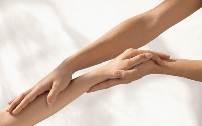

Vartalohoidot

Shiatsu-akupainanta
Kokonaisvaltainen vartalohieronta, jossa painellaan ja hierotaan kehon akupunktiokanavia sekä akupisteitä.
Aromaattiset vartalohoidot
- Relax - rentouttava
- Flow - verenkiertoa edistävä
- Detox - hoikentava
- Tonic - kiinteyttävä
Aromaattinen hierontahoito Aromassage
Rentouttava kokemus kiireen ja stressin keskellä. Hoidossa yhdistyvät kevyt hieronta
sekä 100 % luonnollinen Decleor-balsami.
Odottaville äideille
Raskaushieronta
Raskaanakin voi käydä hieronnassa eikä isokaan vauvavatsa ole esteenä.
Mother-to-be vartalohoito
Kuorinta, aromaattinen hieronta sekä lämmin erikoisnaamio.
Intialainen päähieronta
Auttaa kirkastamaan ajatukset ja hoidon jälkeen pää on taas osa muuta kehoa.
Kuumakivihieronta
Kuumakivihieronnan vaikutus on rentouttava, voimakkaasti stressiä ja kipua laukaiseva.
Hoidossa yhdistyvät kuumien kivien miellyttävä lämpö sekä kevyt ja rentouttava hieronta.
Klassinen ja urheiluhieronta
Täydellinen vartalohoito Aromawrap
Kuorinta, aromaattinen hieronta sekä lämmin erikoisnaamio.